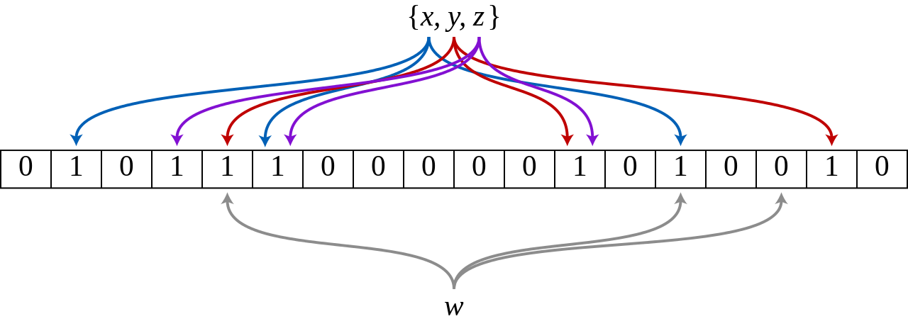

布隆过滤器（Bloom Filter） 是由 Howard Bloom在1970年提出的二进制向量数据结构，它具有很好的空间和时间效率，被用来检测一个元素是不是集合中的一个成员，即判定 “可能已存在和绝对不存在” 两种情况。如果检测结果为是，该元素不一定在集合中；但如果检测结果为否，该元素一定不在集合中,因此Bloom filter具有100%的召回率。
布隆过滤器的核心是一个超大的位数组和几个哈希函数。假设位数组的长度为m,哈希函数的个数为k。
下图表示有三个hash函数，比如一个集合中有x，y，z三个元素，分别用三个hash函数映射到二进制序列的某些位上，假设我们判断w是否在集合中，同样用三个hash函数来映射，结果发现取得的结果不全为1，则表示w不在集合里面。

工作流程:
1、优点：
空间和时间效率存储空间和插入/查询时间都是常数。全集，其它任何数据结构都不能。2、缺点：
误判率会随元素的增加而增加不能从布隆过滤器中删除元素布隆过滤器思路比较简单，但是对于布隆过滤器的随机映射函数设计，需要计算几次，向量长度设置为多少比较合适，这个才是需要认真讨论的。
如果向量长度太短，会导致误判率直线上升。
如果向量太长，会浪费大量内存。
如果计算次数过多，会占用计算资源，且很容易很快就把过滤器填满。
1. 开源包简单演示
package main
import (
"fmt"
"github.com/willf/bitset"
"math/rand"
)
func main() {
Foo()
bar()
}
func Foo() {
var b bitset.BitSet // 定义一个BitSet对象
b.Set(1).Set(2).Set(3) //添加3个元素
if b.Test(2) {
fmt.Println("2已经存在")
}
fmt.Println("总数：", b.Count())
b.Clear(2)
if !b.Test(2) {
fmt.Println("2不存在")
}
fmt.Println("总数：", b.Count())
}
func bar() {
fmt.Printf("Hello from BitSet!\n")
var b bitset.BitSet
// play some Go Fish
for i := 0; i < 100; i++ {
card1 := uint(rand.Intn(52))
card2 := uint(rand.Intn(52))
b.Set(card1)
if b.Test(card2) {
fmt.Println("Go Fish!")
}
b.Clear(card1)
}
// Chaining
b.Set(10).Set(11)
for i, e := b.NextSet(0); e; i, e = b.NextSet(i + 1) {
fmt.Println("The following bit is set:", i)
}
// 交集
if b.Intersection(bitset.New(100).Set(10)).Count() == 1 {
fmt.Println("Intersection works.")
} else {
fmt.Println("Intersection doesn't work???")
}
}2. 封装的方法：
//----------------------------------------------------------------------------
// @ Copyright (C) free license,without warranty of any kind .
// @ Author: hollson <hollson@live.com>
// @ Date: 2019-12-06
// @ Version: 1.0.0
//------------------------------------------------------------------------------
package bloomx
import "github.com/willf/bitset"
const DEFAULT_SIZE = 2<<24
var seeds = []uint{7, 11, 13, 31, 37, 61}
type BloomFilter struct {
Set *bitset.BitSet
Funcs [6]SimpleHash
}
func NewBloomFilter() *BloomFilter {
bf := new(BloomFilter)
for i:=0;i< len(bf.Funcs);i++{
bf.Funcs[i] = SimpleHash{DEFAULT_SIZE,seeds[i]}
}
bf.Set = bitset.New(DEFAULT_SIZE)
return bf
}
func (bf BloomFilter) Add(value string){
for _,f:=range(bf.Funcs){
bf.Set.Set(f.hash(value))
}
}
func (bf BloomFilter) Contains(value string) bool {
if value == "" {
return false
}
ret := true
for _,f:=range(bf.Funcs){
ret = ret && bf.Set.Test(f.hash(value))
}
return ret
}
type SimpleHash struct{
Cap uint
Seed uint
}
func (s SimpleHash) hash(value string) uint{
var result uint = 0
for i:=0;i< len(value);i++{
result = result*s.Seed+uint(value[i])
}
return (s.Cap-1)&result
}func main() {
filter := bloomx.NewBloomFilter()
fmt.Println(filter.Funcs[1].Seed)
str1 := "hello,bloom filter!"
filter.Add(str1)
str2 := "A happy day"
filter.Add(str2)
str3 := "Greate wall"
filter.Add(str3)
fmt.Println(filter.Set.Count())
fmt.Println(filter.Contains(str1))
fmt.Println(filter.Contains(str2))
fmt.Println(filter.Contains(str3))
fmt.Println(filter.Contains("blockchain technology"))
}100W数量级下布隆过滤器测试，源码可参考https://download.csdn.net/download/Gusand/12018239
参考：
推荐：https://www.cnblogs.com/z941030/p/9218356.html
https://www.jianshu.com/p/01309d298a0e
https://www.cnblogs.com/zengdan-develpoer/p/4425167.html
https://blog.csdn.net/liuzhijun301/article/details/83040178
https://github.com/willf/bloom